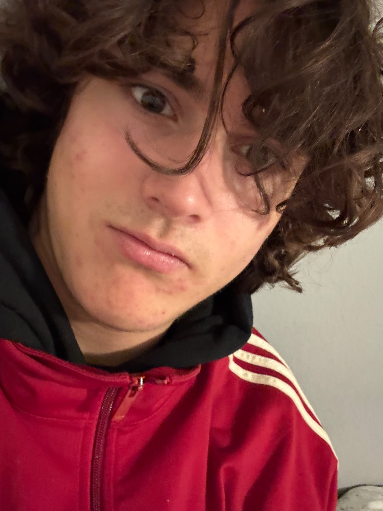

Die Menschen hinter Erlebnis Egerland
Louis
Böhner
18 Jahre · im Projektjahr 2026
Meine Aufgaben
- Filmteam
- Tonteam
Meine Motivation
Warum ich dabei bin
Ich war beim Projektseminar Geografie dabei, weil ich mich für das Thema interessiert habe und die Möglichkeit nutzen wollte, an einem gemeinsamen Projekt mitzuarbeiten und neue Erfahrungen zu sammeln.